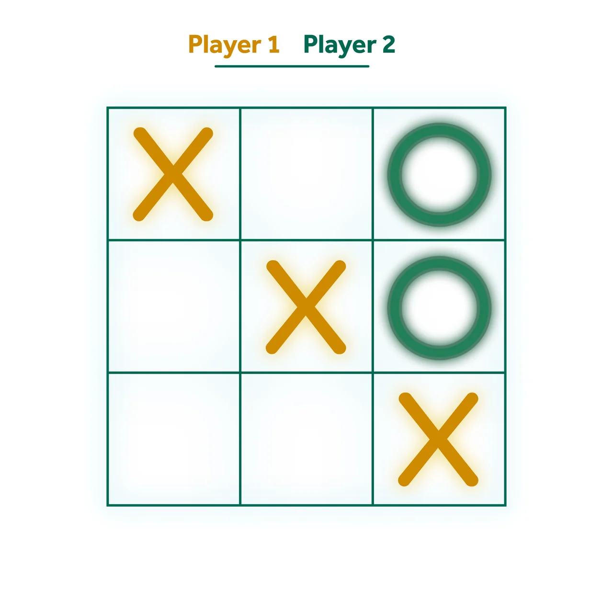

Identical example board state
The full-page exports preserve the existing grid, player labels, piece positions, glows and palette choices without edits.
The same board with two visual personalities.
Explore the storyCompare visual treatments without changing the represented game state.
One composition uses cyan and magenta over a vivid gradient. The other pairs gold and green on white, repeating the player colors in the labels.
The full-page exports preserve the existing grid, player labels, piece positions, glows and palette choices without edits.
No runtime, input method, turn logic or win-detection behavior was executed or verified.
A large three-by-three board fills both portrait compositions.
Explore the complete compositions and interface states. Select any image for a closer look.
02 / PROJECT IMAGES
Select a view to explore.
Portrait tic-tac-toe layout with cyan crosses, magenta circles and a blue-to-pink gradient.
White tic-tac-toe layout with gold crosses, green circles and matching player labels.

Structure, interaction and visual decisions that give the work its character.
RoleConfirm responsibility for screen composition, palette, grid, piece styling and any separate implementation.
AssetsNative UI artwork is present, but authorship of the underlying assets and any game code remains to be confirmed. The two variants are one study, not separate delivered projects.
StatusPrivate game-interface study. Two native layouts reviewed; software behavior and delivery unverified.